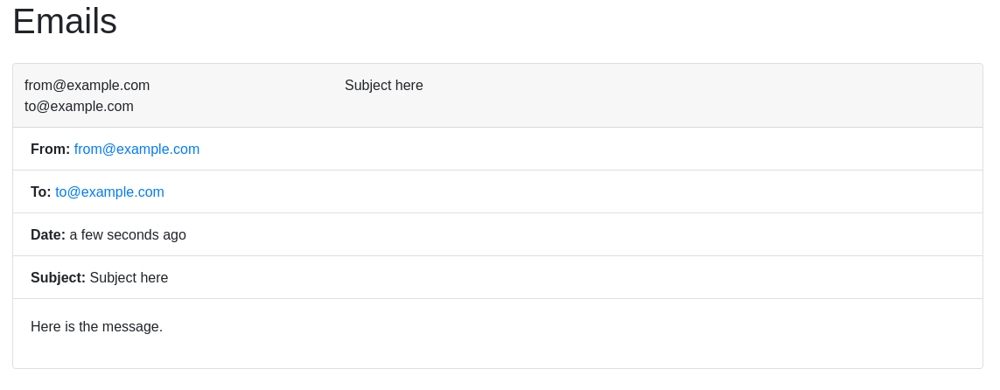

Email¶
Email is used to communicate with end users about signing up and notifying on important events.
Development¶
The Study Creator contains an additional Docker Compose file that may be
applied to start up a mock email server for use when developing.
To run it, include docker-compose.email.yml when starting the development
stack:
DEVELOP=True \
DEVELOPMENT_ENDPOINTS=True \
docker-compose \
-f docker-compose.yml \
-f docker-compose.email.yml \
up -d
This will start a development server that will catch all emails and display
them at http://localhost:1080:

Mock email interface running at http://localhost:1080
Configuration¶
The Study Creator uses the Django email configuration using the EMAIL_*
settings.
More information may be found in the Django Docs.